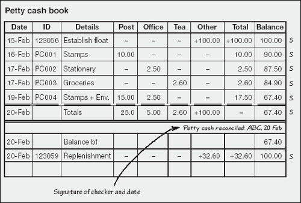

Controlling cash
Is it realistic to suppose that every business payment will go through the bank account? What if you need to run out and buy some coffee or duplicate a few pages at a copy bureau? Well, there is a rather neat trick which allows you to pass even these tiny transactions through the bank account. The trick is known as the imprest system of accounting for petty cash, named after the old French word for loan. It works as follows.
The first step it to decide how much petty cash you will use between replenishments. A couple of week’s worth of spending is usually about right. For the moment, forget about refreshing petty cash from cash sales and other sources. Such money should be paid into your bank account in its entirety to avoid confusion and even fraud in the accounts.
Say you want a cash float of up to $100. On the day you start business, you write a cheque for this amount and put the cash in a locking box or drawer. At the end of the week when you empty your shoebox and pass on your transactions, you will credit cash at bank and debit petty cash. This will almost never change, as explained in a moment.
| Credit bank account: | |||
| Account | Bank account #1 | Date | 15-Feb |
| Payee | Cash | Cheque no. | 123056 |
| Description | Establish petty cash float | Amount $ | 100.00 |
| Charge to: | |||
| Account no. | Account name | Debit $ | Credit $ |
| 1-1001 | Petty Cash | 100.00 | – |
All raids on the petty cash drawer should be supported by a voucher – just as with withdrawals from the bank account. I suggested above that you could be a bit lax with bank vouchers and make up the accounts just once a week. This is not a good practice with cash. Keep a hardback notebook in the cash box and record details of each withdrawal as and when it is made. In fact, if you rule the notebook into columns, use one as a running total, and write the double entry (stationery, groceries, sundries, etc.) in one of the other columns, you are almost there.
‘Numerical precision is the very soul of science.’
—Sir D’Arcy Wentworth Thompson
When the petty cash starts to run low, or on your chosen replenishment dates, you write a cheque to top up the petty cash to the original $100. If you had spent $32.60 since the previous refill, you put $32.60 back in this time. In this case you would rule off your notebook under the $32.60 worth of spending, start again in the notebook at $100, and post $32.60 worth of vouchers against the bank transaction as follows:
| Credit bank account: | |||
| Account | Bank account #1 | Date | 20-Feb |
| Payee | Cash | Cheque no. | 123059 |
| Description | Replenish petty cash | Amount $ | 32.60 |
| Charge to: | |||
| Account no. | Account name | Debit $ | Credit $ |
| 6–3503 | Postage | 25.00 | – |
| 6–4006 | Office Stationery | 5.00 | – |
| 6–4020 | Office Sundries | 2.60 | – |
| Totals | 32.60 | – | |
Your books will carry an asset account called petty cash with a debit balance of $100 almost for ever more, and all the petty cash spending is recorded against bank transactions. I think this is pretty neat. If you are going to admire bean counters for getting some things right, this is one of them.
Ten rules for managing cash
|
| As soon as financial responsibilities are delegated, there is an increased risk of sticky fingers in the pie. You should be especially aware of ways that corporate funds might be abused.
|